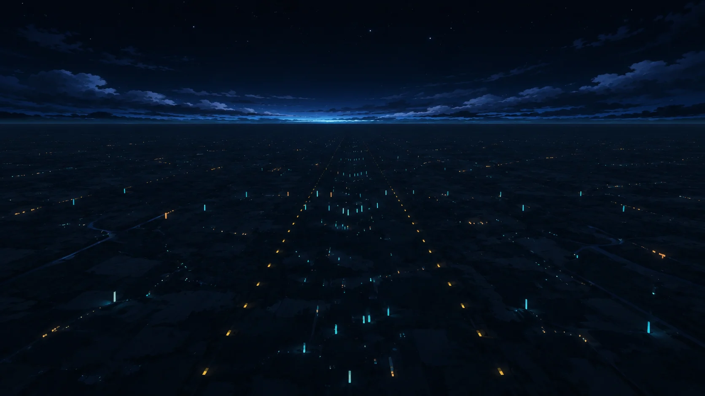
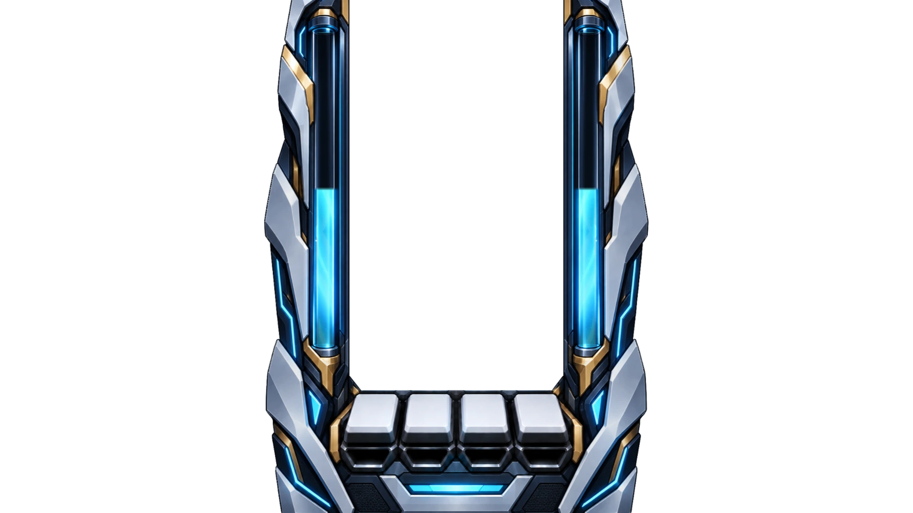

FLIGHT BACKGROUND / 2026.10.18 · 2차
배경 시안 위에 인게임 에셋 겹쳐 보기
지금 배경은 어둡고 평평한 픽셀풍이라 광택 일러스트로 그린 기어와 화풍이 다릅니다. 2차 시안은 지금 배경의 장면 구성과 고도 상·중·하를 그대로 따르면서 기어와 같은 일러스트 화풍으로 다시 그렸습니다. 노트와 기어에 집중할 수 있도록 대비·채도·디테일은 낮췄습니다. 실제 게임 렌더러에서 뽑은 기어·레인·노트·HUD를 올렸다 내리며 지금 배경과 비교합니다.






2차 시안 · Liftoff · 고도 중
배경 원본 보기

미리보기를 누르거나 H 키로 에셋을 올리고 내립니다. C 키로 2차 시안과 지금 배경을 바꿔 봅니다.
2차 시안 한눈에 보기
장면마다 같은 장소를 고도 상·중·하에서 본 세 장입니다. 누르면 위 미리보기에 띄웁니다.
상 · 100%중 · 50%하 · 0%
Liftoff
Infiltration
Breakthrough
만든 방법과 한계 펼치기
- 2차 시안은 장면마다 지금 배경을 고도 상·중·하(100%·50%·0%)로 캡처한 세 장과 기어 원본을 참고 이미지로 넣어 생성했습니다. 메탈릭 구조물은 쓰지 않고, 기어에 가려지는 가운데 띠는 차분하게 두며, 기어의 하늘색·금색은 작은 불빛에만 남기도록 요청했습니다.
- 1차 시안(메탈릭 장갑·밝은 구조물 6장)은 너무 강하다는 피드백으로 뺐습니다.
- 인게임 레이어와 지금 배경은 실제 게임 렌더러(Classic 스킨, 기어,
/lab/gear시연 차트)를 곡 시작 8.8초 시점에 멈춰 1920×1080으로 캡처했습니다. 기어의 유리관 게이지는 고른 고도를 보여 줍니다. - 시안은 정지 이미지라 고도 사이의 연속 변화와 움직임은 없습니다. 지금 게임 배경은 고도에 따라 움직이는 3D 장면이라, 방향을 고르면 그 화풍을 움직이는 배경으로 옮기는 작업이 따로 필요합니다.